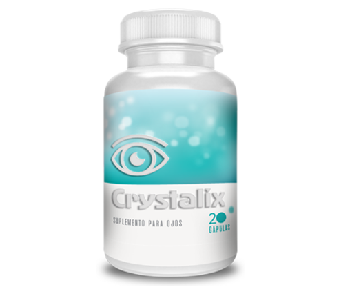
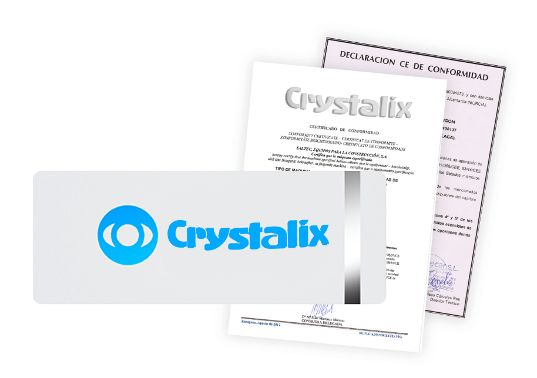

- केवल 1 प्रवेश पाठ्यक्रम में
- दृष्टि बहाल करें
- कांच की अस्पष्टता को रोकता है
- थकान और सूजन से राहत दिलाता है
- आंखों के दबाव को सामान्य करता है
जलन, खुजली, लाली, एक "रेतीली" भावना, या आंख में एक विदेशी शरीर।
मोतियाबिंद, ग्लूकोमा, प्युलुलेंट सूजन।
ठीक होने में सक्षम हुए बिना दृष्टि का पूर्ण नुकसान।
यहां तक कि ठीक से चयनित चश्मा या आंखों के लेंस भी समय के साथ दृष्टि को प्रभावित कर सकते हैं। वे आंख की मांसपेशियों को आराम देते हैं और दृष्टि कम हो जाती है।
कैप्सूल Crystalix एक प्राकृतिक उपचार है जो दृष्टि पर सकारात्मक प्रभाव डालता है, सबसे आम नेत्र रोगों का पूर्ण उन्मूलन प्रदान करता है। सबसे आम नेत्र रोगों से पूर्ण राहत प्रदान करना।
यह एकमात्र पूरक है जो नेत्रगोलक की मांसपेशियों और नेत्र वाहिकाओं की दीवारों को मजबूत करता है। इसके कारण, उज्ज्वल और स्पष्ट दृष्टि और सामान्य फोकस वापस आ जाता है। केवल 1 प्रवेश कार्यप्रणाली में।
1. दृश्य तंत्र के सामान्य कामकाज को सुनिश्चित करने वाले सभी शरीर प्रणालियों के कामकाज में सुधार।
2. दृष्टि बहाल करने के लिए सर्जरी की आवश्यकता का उन्मूलन।
3. 99% मामलों में, दृष्टि पूरी तरह से बहाल हो जाती है।
4. कोई दुष्प्रभाव नहीं
हाल के वर्षों में, तेजी से अपनी दृष्टि खोने वाले लोगों की संख्या में 18 गुना वृद्धि हुई है। मेरे कई मरीज़ अपनी दृष्टि पूरी तरह से खोने से डरते हैं, वे घबराते हैं और मुझे चश्मा और चश्मा लिखने के लिए कहते हैं, यह महसूस नहीं करते कि इस तरह के उपाय से भविष्य में स्थिति और खराब हो जाएगी।
आज हमारे पास प्राकृतिक उपचार का उपयोग करके समस्या को हल करने का अवसर है। इन उद्देश्यों के लिए, Crystalix कैप्सूल विकसित किए गए हैं। मैं उन्हें अपने सभी रोगियों को सलाह देता हूं, और 99% मामलों में वे Crystalix कोर्स लेने के तुरंत बाद स्पष्ट दृष्टि प्राप्त करते हैं।
दवा की अनूठी संरचना के लिए सभी धन्यवाद, जिसमें विशेष रूप से चयनित घटक शामिल हैं जो आंख की मांसपेशियों के सामान्य कामकाज को बहाल करते हैं और लेंस की स्थिति में सुधार करते हैं - अच्छी दृष्टि के लिए मुख्य कारक।
आंखों के लिए जिम्नास्टिक के संयोजन में इस तरह की चिकित्सा कम से कम समय में एक उत्कृष्ट परिणाम प्रदान करती है और सर्जिकल हस्तक्षेप से बचने में मदद करती है।
नकली और निम्न-गुणवत्ता वाले एनालॉग्स से बचने के लिए, केवल इस वेबसाइट पर मूल आइटम खरीदें।
निर्माता 100% गुणवत्ता की गारंटी देता है
